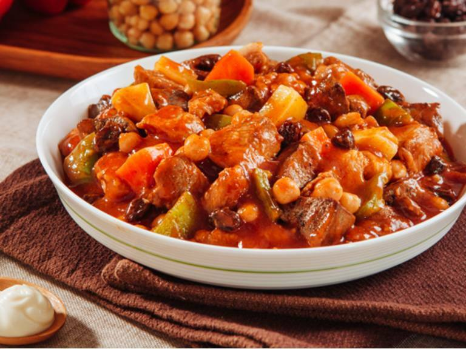

Create this beloved classic the no-fuss way with Del Monte Tomato Sauce.
 Menudo is a popular Filipino pork dish.
It is usually served during gatherings and fiesta.
Every home, town, or province might have their own version!
Make sure not to overcook the veggies such as the potatoes and carrots.
This step is easy to overlook and you might end up with too soft or mushy veggies.
Don't forget to serve this fiesta dish with lots of steamed rice! You'll need it to soak up all the flavor.
INGREDIENTS
- 2 Tbsp oil
- 1 1/2 Tbsp garlic, crushed
- 2 Tbsp onion, red, sliced
- 200 g pork pigue, cut into cubes
- 1/2 cup water
- 1 pc bay leaf/laurel leaf
- 1/2 tsp salt
- 1/8 tsp pepper, black
- 100 g pork liver, cut into cubes
- 1/2 cup potato, cut into cubes
- 1/2 cup carrot, cut into cubes
- 1/3 cup garbanzos, cooked
- 1 pouch DEL MONTE Original Style Tomato Sauce (200g)
- 2 Tbsp raisins
- 1/4 cup bell pepper, green, cut into cubes
- 1/4 cup bell pepper, red, cut into cubes
PREPARATION
- Sauté garlic, onion, and pork for 3 minutes. Add water, laurel, salt, and pepper.
- Bring to a boil then simmer over medium heat for 20 - 30 minutes.
- Add liver, potato, carrot, garbanzos, and DEL MONTE Original Style Tomato Sauce.
- Simmer for 20 minutes.
- Add raisins and bell peppers.
- Simmer for another 3 minutes.
TOOLS
- Bowls
- Measuring Cups
- Pot
- Chopping Board
- Measuring Spoon
- Wooden Spatula
- Knife
- Pan